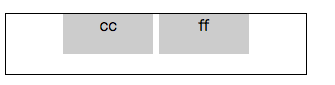

<!DOCTYPE html>
<html lang="en">
<head><meta name="generator" content="Hexo 3.8.0">
  <meta charset="utf-8">
  
  
  
    <meta name="description" content="forever young">
  
  <meta name="viewport" content="width=device-width, initial-scale=1, maximum-scale=1">
  <title>
    css 居中那点事 |
    
    xqyoung&#39;s blog</title>
  
    <link rel="shortcut icon" href="/favicon.ico">
  
  <link rel="stylesheet" href="/css/style.css">
  
    <link rel="stylesheet" href="/fancybox/jquery.fancybox.min.css">
  
  <script src="/js/pace.min.js"></script>
</head>
</html>
<body>
<main class="content">
  <section class="outer">
  <article id="post-css-middle-util" class="article article-type-post" itemscope="" itemprop="blogPost" data-scroll-reveal="">

    <div class="article-inner">
        
            <header class="article-header">
                
  
    <h1 class="article-title" itemprop="name">
      css 居中那点事
    </h1>
  
  


            </header>
            

                
                    <div class="article-meta">
                        <a href="/2018/11/20/css-middle-util/" class="article-date">
  <time datetime="2018-11-20T11:09:01.000Z" itemprop="datePublished">2018-11-20</time>
</a>
                            
  <div class="article-category">
    <a class="article-category-link" href="/categories/css-基础/">css 基础</a>
  </div>

                    </div>
                    

                        
                            
    <div class="tocbot"></div>


                                

                                    <div class="article-entry" itemprop="articleBody">
                                        


                                            

                                                
                                                                    <blockquote>
<p><a href="https://www.xqyoung.com/2018/11/20/css-selector/">css width, height, margin 的计算</a></p>
</blockquote>
<h3 id="居中"><a href="#居中" class="headerlink" title="居中"></a>居中</h3><p>子元素可能是块级元素，行内不可替换元素，行内可替换元素（以 img 元素为例）。</p>
<p>后面的样式基于下面的 html：</p>
<figure class="highlight html"><table><tr><td class="gutter"><pre><span class="line">1</span><br><span class="line">2</span><br><span class="line">3</span><br></pre></td><td class="code"><pre><span class="line"><span class="tag">&lt;<span class="name">div</span> <span class="attr">class</span>=<span class="string">"parent"</span>&gt;</span></span><br><span class="line">  <span class="tag">&lt;<span class="name">div</span> <span class="attr">class</span>=<span class="string">"child"</span>&gt;</span><span class="tag">&lt;/<span class="name">div</span>&gt;</span></span><br><span class="line"><span class="tag">&lt;/<span class="name">div</span>&gt;</span></span><br></pre></td></tr></table></figure>
<h4 id="margin-left-margin-right"><a href="#margin-left-margin-right" class="headerlink" title="margin-left + margin-right"></a>margin-left + margin-right</h4><p>一般来说，我们会给块级元素设定 width （width 为 auto 的话会被计算为撑满包含块，那就无所谓“居中”了）。最常用水平居中就是 <code>margin: 0 auto</code> 。</p>
<figure class="highlight css"><table><tr><td class="gutter"><pre><span class="line">1</span><br><span class="line">2</span><br><span class="line">3</span><br><span class="line">4</span><br></pre></td><td class="code"><pre><span class="line"><span class="selector-class">.child</span> &#123;</span><br><span class="line">	<span class="attribute">margin</span>: <span class="number">0</span> auto;</span><br><span class="line">	<span class="attribute">width</span>: <span class="number">20px</span>; <span class="comment">/* width: 40%; */</span></span><br><span class="line">&#125;</span><br></pre></td></tr></table></figure>
<p>子元素定位是 relative 或 static 的情况下，会把第一个块级元素作为自己的包含块。处于文档流的子元素的左右 margin 会被计算为相等数值，这是居中的依据。</p>
<p>这种居中方法可以居中块级元素。对于 img 稍做处理：在外部包裹上一层 div ，让 img 的 width 等于这层 div 的 100% 。img 加上包裹的 div ，就是一个块，适用本条居中原则。</p>
<p>类似的，height 属性可以这么做吗？然而 <code>margin: auto 0</code> 并不会垂直居中任何东西，因为 height 属性的计算法则里面，文档流中的元素，auto 值的上下 margin 会被计算为 0 。 </p>
<h4 id="absolute-margin-left-transform"><a href="#absolute-margin-left-transform" class="headerlink" title="absolute + margin-left/transform"></a>absolute + margin-left/transform</h4><p>子元素是绝对定位的条件下，需要打破原先的包含块 position 的 static 定位（一般用 relative ）。</p>
<figure class="highlight css"><table><tr><td class="gutter"><pre><span class="line">1</span><br><span class="line">2</span><br><span class="line">3</span><br><span class="line">4</span><br><span class="line">5</span><br><span class="line">6</span><br><span class="line">7</span><br><span class="line">8</span><br><span class="line">9</span><br><span class="line">10</span><br></pre></td><td class="code"><pre><span class="line"><span class="selector-class">.parent</span> &#123;</span><br><span class="line">	<span class="attribute">position</span>: relative;</span><br><span class="line">&#125;</span><br><span class="line"></span><br><span class="line"><span class="selector-class">.child</span> &#123;</span><br><span class="line">	<span class="attribute">position</span>: absolute;</span><br><span class="line">	<span class="attribute">left</span>: <span class="number">50%</span>;</span><br><span class="line">	<span class="attribute">margin-left</span>: -<span class="number">30px</span>;</span><br><span class="line">	<span class="attribute">width</span>: <span class="number">60px</span>;</span><br><span class="line">&#125;</span><br></pre></td></tr></table></figure>
<p>子元素定宽（显示指定 px、em、rem 值）的条件下，可以用上 margin-left 负值。子元素不定宽的时候用 <code>transform: translateX(-50%)</code> 可以解决问题。</p>
<p>绝对定位的原理也可以应用到垂直居中上。</p>
<h4 id="inline-block-text-align"><a href="#inline-block-text-align" class="headerlink" title="inline-block + text-align"></a>inline-block + text-align</h4><p>inline-block：对外呈现行内元素，对内呈现块级元素。所以可以设定宽高；没有指定宽高的时候，像行内元素一样由内容去界定盒子大小。可以像行内元素一样，多个排列在一行。</p>
<figure class="highlight css"><table><tr><td class="gutter"><pre><span class="line">1</span><br><span class="line">2</span><br><span class="line">3</span><br><span class="line">4</span><br><span class="line">5</span><br><span class="line">6</span><br><span class="line">7</span><br></pre></td><td class="code"><pre><span class="line"><span class="selector-class">.parent</span> &#123;</span><br><span class="line">	<span class="attribute">text-align</span>: center;</span><br><span class="line">&#125;</span><br><span class="line"></span><br><span class="line"><span class="selector-class">.child</span> &#123;</span><br><span class="line">	<span class="attribute">display</span>: inline-block;</span><br><span class="line">&#125;</span><br></pre></td></tr></table></figure>
<p>多个 inline-block 元素并排，元素之间在某些情况下会出现“莫名的间隙”。</p>
<p></p>
<figure class="highlight html"><table><tr><td class="gutter"><pre><span class="line">1</span><br><span class="line">2</span><br><span class="line">3</span><br><span class="line">4</span><br><span class="line">5</span><br><span class="line">6</span><br><span class="line">7</span><br><span class="line">8</span><br><span class="line">9</span><br><span class="line">10</span><br></pre></td><td class="code"><pre><span class="line"><span class="comment">&lt;!-- 不会有间隙 --&gt;</span></span><br><span class="line"><span class="tag">&lt;<span class="name">div</span> <span class="attr">class</span>=<span class="string">"parent"</span>&gt;</span></span><br><span class="line">	<span class="tag">&lt;<span class="name">div</span> <span class="attr">class</span>=<span class="string">"child box"</span>&gt;</span>cc<span class="tag">&lt;/<span class="name">div</span>&gt;</span><span class="tag">&lt;<span class="name">div</span> <span class="attr">class</span>=<span class="string">"child box"</span>&gt;</span>ff<span class="tag">&lt;/<span class="name">div</span>&gt;</span></span><br><span class="line"><span class="tag">&lt;/<span class="name">div</span>&gt;</span></span><br><span class="line"></span><br><span class="line"><span class="comment">&lt;!-- 出现间隙 --&gt;</span></span><br><span class="line"><span class="tag">&lt;<span class="name">div</span> <span class="attr">class</span>=<span class="string">"parent"</span>&gt;</span></span><br><span class="line">	<span class="tag">&lt;<span class="name">div</span> <span class="attr">class</span>=<span class="string">"child box"</span>&gt;</span>cc<span class="tag">&lt;/<span class="name">div</span>&gt;</span></span><br><span class="line">	<span class="tag">&lt;<span class="name">div</span> <span class="attr">class</span>=<span class="string">"child box"</span>&gt;</span>ff<span class="tag">&lt;/<span class="name">div</span>&gt;</span></span><br><span class="line"><span class="tag">&lt;/<span class="name">div</span>&gt;</span></span><br></pre></td></tr></table></figure>
<p>间隙是子元素之间的空格符或回车符引起的。既然是字符，那便可以让它“最小化”，达到去除间隙的目的。</p>
<figure class="highlight css"><table><tr><td class="gutter"><pre><span class="line">1</span><br><span class="line">2</span><br><span class="line">3</span><br><span class="line">4</span><br><span class="line">5</span><br><span class="line">6</span><br><span class="line">7</span><br></pre></td><td class="code"><pre><span class="line"><span class="selector-class">.parent</span> &#123;</span><br><span class="line">	<span class="attribute">font-size</span>: <span class="number">0</span>;</span><br><span class="line">&#125;</span><br><span class="line"></span><br><span class="line"><span class="selector-class">.child</span> &#123;</span><br><span class="line">	<span class="attribute">font-size</span>: <span class="number">14px</span>;</span><br><span class="line">&#125;</span><br></pre></td></tr></table></figure>
<h4 id="单行文字、图片、块框垂直居中"><a href="#单行文字、图片、块框垂直居中" class="headerlink" title="单行文字、图片、块框垂直居中"></a>单行文字、图片、块框垂直居中</h4><p>居中单行文字，只需给文字所在的元素加上 line-height 属性，值等于元素 height 。</p>
<p>单行图片也是类似的，我们把图片看成文字。</p>
<figure class="highlight html"><table><tr><td class="gutter"><pre><span class="line">1</span><br><span class="line">2</span><br><span class="line">3</span><br></pre></td><td class="code"><pre><span class="line"><span class="tag">&lt;<span class="name">div</span> <span class="attr">class</span>=<span class="string">"parent"</span>&gt;</span></span><br><span class="line">    <span class="tag">&lt;<span class="name">img</span> <span class="attr">class</span>=<span class="string">"child"</span> <span class="attr">src</span>=<span class="string">"xxx.jpg"</span>/&gt;</span></span><br><span class="line"><span class="tag">&lt;/<span class="name">div</span>&gt;</span></span><br></pre></td></tr></table></figure>
<figure class="highlight css"><table><tr><td class="gutter"><pre><span class="line">1</span><br><span class="line">2</span><br><span class="line">3</span><br><span class="line">4</span><br><span class="line">5</span><br><span class="line">6</span><br><span class="line">7</span><br></pre></td><td class="code"><pre><span class="line"><span class="selector-class">.parent</span> &#123;</span><br><span class="line">	<span class="attribute">height</span>: <span class="number">60px</span>;</span><br><span class="line">	<span class="attribute">line-height</span>: <span class="number">60px</span>;</span><br><span class="line">&#125;</span><br><span class="line"><span class="selector-class">.child</span> &#123;</span><br><span class="line">	<span class="attribute">vertical-align</span>: middle;</span><br><span class="line">&#125;</span><br></pre></td></tr></table></figure>
<p>vertical-align 属性只对 table-cell 以及 inline-element 起作用。如果垂直居中一个块框，把它的 display 属性设为 inline-block，然后处理方法如图片垂直居中。</p>
<h4 id="flex-布局"><a href="#flex-布局" class="headerlink" title="flex 布局"></a>flex 布局</h4><p>指定包含框为一个 flex 容器，定义项目在主轴和次轴的对齐方式。</p>
<figure class="highlight css"><table><tr><td class="gutter"><pre><span class="line">1</span><br><span class="line">2</span><br><span class="line">3</span><br><span class="line">4</span><br><span class="line">5</span><br></pre></td><td class="code"><pre><span class="line"><span class="selector-class">.parent</span> &#123;</span><br><span class="line">  <span class="attribute">display</span>: flex;</span><br><span class="line">  <span class="attribute">justify-content</span>: center;</span><br><span class="line">  <span class="attribute">align-items</span>: center;</span><br><span class="line">&#125;</span><br></pre></td></tr></table></figure>
<h3 id="经典布局方案"><a href="#经典布局方案" class="headerlink" title="经典布局方案"></a>经典布局方案</h3><h4 id="圣杯布局"><a href="#圣杯布局" class="headerlink" title="圣杯布局"></a>圣杯布局</h4><p>布局的思路参考 Matthew Levine 于2006年在「A LIST APART」上写的文章 <a href="https://alistapart.com/article/holygrail" target="_blank" rel="noopener">In Search of the Holy Grail
</a> 。侧边栏定宽，中间自适应布局，用 padding 空出容器两边的侧边栏，通过浮动定位放置三栏。</p>
<figure class="highlight html"><table><tr><td class="gutter"><pre><span class="line">1</span><br><span class="line">2</span><br><span class="line">3</span><br><span class="line">4</span><br><span class="line">5</span><br><span class="line">6</span><br><span class="line">7</span><br></pre></td><td class="code"><pre><span class="line"><span class="tag">&lt;<span class="name">div</span> <span class="attr">id</span>=<span class="string">"header"</span>&gt;</span>#header<span class="tag">&lt;/<span class="name">div</span>&gt;</span></span><br><span class="line">  <span class="tag">&lt;<span class="name">div</span> <span class="attr">class</span>=<span class="string">"container"</span>&gt;</span></span><br><span class="line">    <span class="tag">&lt;<span class="name">div</span> <span class="attr">class</span>=<span class="string">"middle"</span>&gt;</span><span class="tag">&lt;/<span class="name">div</span>&gt;</span></span><br><span class="line">    <span class="tag">&lt;<span class="name">div</span> <span class="attr">class</span>=<span class="string">"left column"</span>&gt;</span><span class="tag">&lt;/<span class="name">div</span>&gt;</span></span><br><span class="line">    <span class="tag">&lt;<span class="name">div</span> <span class="attr">class</span>=<span class="string">"right column"</span>&gt;</span><span class="tag">&lt;/<span class="name">div</span>&gt;</span></span><br><span class="line">  <span class="tag">&lt;/<span class="name">div</span>&gt;</span></span><br><span class="line">  <span class="tag">&lt;<span class="name">div</span> <span class="attr">id</span>=<span class="string">"footer"</span>&gt;</span>#footer<span class="tag">&lt;/<span class="name">div</span>&gt;</span></span><br></pre></td></tr></table></figure>
<p></p>
<p><a href="https://codepen.io/sheepig-the-bashful/full/MPWPwP" target="_blank" rel="noopener">codepen demo</a></p>
<p>主要的技巧是 <code>margin-left: -100%</code> 会导致浮动块上移一行，盖住前一块。margin-left 负的值等于浮动块 width 时，上移一行，紧贴前一个块的末尾。</p>
<h4 id="双飞翼布局"><a href="#双飞翼布局" class="headerlink" title="双飞翼布局"></a>双飞翼布局</h4><p>当页面缩放，中间块的 content 宽度小于任一侧边栏的时候，会发生布局混乱。</p>
<p></p>
<p>因为 padding 不会被计算到包含块里面，三栏都是浮动的，就会造成“挤不下”的局面。</p>
<p><a href="https://codepen.io/sheepig-the-bashful/full/YJPqVW" target="_blank" rel="noopener">codepen demo</a></p>
<figure class="highlight html"><table><tr><td class="gutter"><pre><span class="line">1</span><br><span class="line">2</span><br><span class="line">3</span><br><span class="line">4</span><br><span class="line">5</span><br><span class="line">6</span><br><span class="line">7</span><br></pre></td><td class="code"><pre><span class="line"><span class="tag">&lt;<span class="name">div</span> <span class="attr">id</span>=<span class="string">"header"</span>&gt;</span>#header<span class="tag">&lt;/<span class="name">div</span>&gt;</span></span><br><span class="line">  <span class="tag">&lt;<span class="name">div</span> <span class="attr">class</span>=<span class="string">"container"</span>&gt;</span></span><br><span class="line">    <span class="tag">&lt;<span class="name">div</span> <span class="attr">class</span>=<span class="string">"middle-wrap column"</span>&gt;</span><span class="tag">&lt;<span class="name">div</span> <span class="attr">class</span>=<span class="string">"middle"</span>&gt;</span><span class="tag">&lt;/<span class="name">div</span>&gt;</span><span class="tag">&lt;/<span class="name">div</span>&gt;</span></span><br><span class="line">    <span class="tag">&lt;<span class="name">div</span> <span class="attr">class</span>=<span class="string">"left column"</span>&gt;</span><span class="tag">&lt;/<span class="name">div</span>&gt;</span></span><br><span class="line">    <span class="tag">&lt;<span class="name">div</span> <span class="attr">class</span>=<span class="string">"right column"</span>&gt;</span><span class="tag">&lt;/<span class="name">div</span>&gt;</span></span><br><span class="line">  <span class="tag">&lt;/<span class="name">div</span>&gt;</span></span><br><span class="line">  <span class="tag">&lt;<span class="name">div</span> <span class="attr">id</span>=<span class="string">"footer"</span>&gt;</span>#footer<span class="tag">&lt;/<span class="name">div</span>&gt;</span></span><br></pre></td></tr></table></figure>
<p>container 不需要设置 padding ，直接让它撑满视口。我们在中间那一栏加了一层 div ，同样让它撑满父元素。</p>
<p>左右两栏的 margin 相对于包含块 container 的 content 宽度计算的，因为 container 没有内边距，所以这两栏上移的时候会移到 middle-wrap 的外边距里面。</p>

                                                                        
                                    </div>
                                    <footer class="article-footer">
                                        <a data-url="http://www.xqyoung.com/2018/11/20/css-middle-util/" data-id="ckciy9etd000c51jbz4cdasvb" class="article-share-link">
                                            Share
                                        </a>
                                        
  <ul class="article-tag-list"><li class="article-tag-list-item"><a class="article-tag-list-link" href="/tags/css/">css</a></li></ul>

                                    </footer>

    </div>

    
        
  <nav class="article-nav">
    
      <a href="/2018/11/20/pure-function/" class="article-nav-link">
        <strong class="article-nav-caption">Newer</strong>
        <div class="article-nav-title">
          
            纯函数
          
        </div>
      </a>
    
    
      <a href="/2018/11/20/css-selector/" class="article-nav-link">
        <strong class="article-nav-caption">Older</strong>
        <div class="article-nav-title">css 选择器优先级计算</div>
      </a>
    
  </nav>


            

                
                    
                        
                            

</article>
</section>
  <footer class="footer">
  <div class="outer">
    <div class="float-right">
      <ul class="list-inline">
  
    <li><i class="fe fe-smile-alt"></i> <span id="busuanzi_value_site_uv"></span></li>
  
    <li><i class="fe fe-bookmark"></i> <span id="busuanzi_value_page_pv"></span></li>
  
</ul>
    </div>
    <ul class="list-inline">
      <li>&copy; 2020 xqyoung&#39;s blog</li>
      <li>Powered by <a href="http://hexo.io/" target="_blank">Hexo</a></li>
      <li>Theme  <a href="https://github.com/zhwangart/hexo-theme-ocean">Ocean</a></li>
    </ul>
  </div>
</footer>

</main>
<aside class="sidebar">
  <button class="navbar-toggle"></button>
<nav class="navbar">
  
    <div class="logo">
      <a href="/"></a>
    </div>
  
  <ul class="nav nav-main">
    
      <li class="nav-item">
        <a class="nav-item-link" href="/">Home</a>
      </li>
    
      <li class="nav-item">
        <a class="nav-item-link" href="/archives">Archives</a>
      </li>
    
      <li class="nav-item">
        <a class="nav-item-link" href="/gallery">Gallery</a>
      </li>
    
      <li class="nav-item">
        <a class="nav-item-link" href="/about">About</a>
      </li>
    
    <li class="nav-item">
      <a class="nav-item-link nav-item-search" title="Search">
        <i class="fe fe-search"></i>
        Search
      </a>
    </li>
  </ul>
</nav>
<nav class="navbar navbar-bottom">
  <ul class="nav">
    <li class="nav-item">
      <div class="totop" id="totop">
  <i class="fe fe-rocket"></i>
</div>
    </li>
    <li class="nav-item">
      
        <a class="nav-item-link" target="_blank" href="/atom.xml" title="RSS Feed">
          <i class="fe fe-feed"></i>
        </a>
      
    </li>
  </ul>
</nav>
<div class="search-form-wrap">
  <div class="local-search local-search-plugin">
  <input type="search" id="local-search-input" class="local-search-input" placeholder="Search...">
  <div id="local-search-result" class="local-search-result"></div>
</div>
</div>
</aside>
<script src="/js/jquery-2.0.3.min.js"></script>
<script src="/js/jquery.justifiedGallery.min.js"></script>
<script src="/js/lazyload.min.js"></script>
<script src="/js/busuanzi-2.3.pure.min.js"></script>

  <script src="/fancybox/jquery.fancybox.min.js"></script>


  <script src="/js/tocbot.min.js"></script>
  <script>
    // Tocbot_v4.7.0  http://tscanlin.github.io/tocbot/
    tocbot.init({
      tocSelector: '.tocbot',
      contentSelector: '.article-entry',
      headingSelector: 'h1, h2, h3, h4, h5, h6',
      hasInnerContainers: true,
      scrollSmooth: true,
      positionFixedSelector: '.tocbot',
      positionFixedClass: 'is-position-fixed',
      fixedSidebarOffset: 'auto',
    });
  </script>


<script src="/js/ocean.js"></script>

</body>
</html>